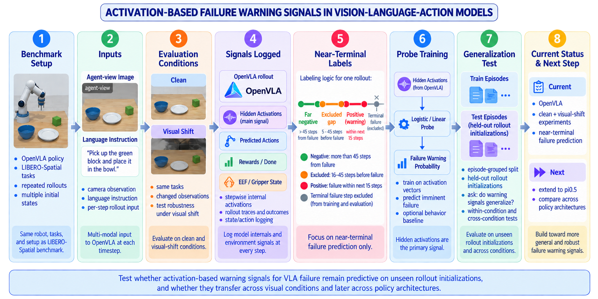
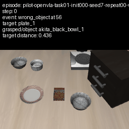
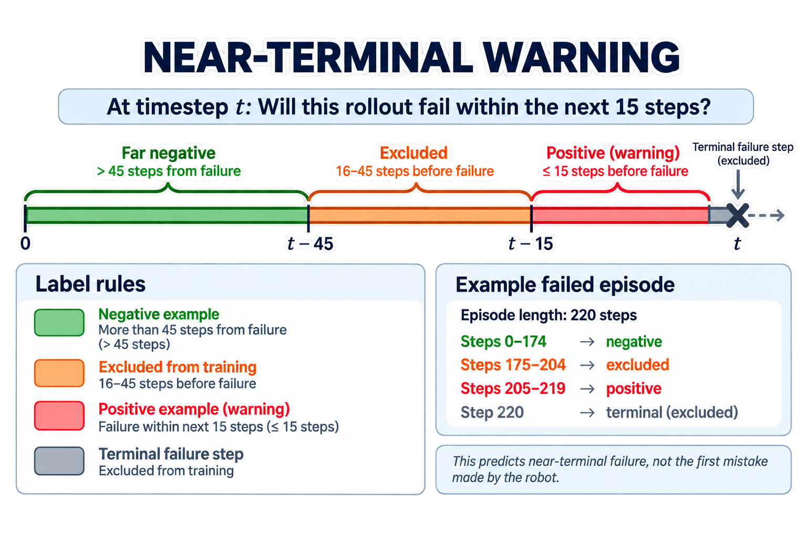

Machine learning reliability, interpretability,
and robots that occasionally make poor decisions.
University of Florida
Undergraduate AI Research Assistant
2025 — present
01.
ACTIVATION-BASED FAILURE WARNING IN
VISION-LANGUAGE-ACTION MODELS
[IN PROGRESS]
Research question
Do activation-based warning signals for VLA task failure remain predictive on unseen rollout initializations and under changed visual conditions?
Vision-language-action models can continue producing plausible robot actions even as a rollout moves toward failure. This work studies whether internal OpenVLA activations contain signals that indicate an approaching task failure before the episode terminates.
The current experiments use OpenVLA rollouts in LIBERO-Spatial. The immediate goal is to determine whether a lightweight probe trained on internal activations can predict near-terminal failure and whether that signal generalizes beyond the rollout initializations used during training.

Current setup
- Model
- OpenVLA-7B, fine-tuned on LIBERO-Spatial
- Environment
- LIBERO-Spatial robotic manipulation tasks
- Primary signal
- Hidden activations collected from OpenVLA during each rollout
- Additional rollout data
- Predicted robot actions, end-effector state, gripper state, rewards, and episode outcomes
- Conditions
- Clean observations and controlled visual-shift observations

Methodology
OpenVLA is run across repeated LIBERO-Spatial rollouts with multiple task initializations. Internal activations and rollout state are recorded at each timestep.
The experiment then converts each rollout into labeled timestep examples:
- Positive: failure occurs within the next 15 steps
- Excluded: the timestep is 16–45 steps before failure
- Far negative: the timestep is more than 45 steps from failure
- Terminal failure step: excluded from the prediction task
A lightweight logistic or linear probe is trained on the activation vectors to estimate the probability of near-terminal failure.
Episodes are kept intact during train/test splitting so that timesteps from the same rollout cannot appear in both sets. The current generalization experiment evaluates the probe on held-out rollout initializations that were not used during training.
Near-terminal warning
At timestep t:
Will this rollout fail within the next 15 steps?
This is a near-terminal warning task, not an attempt to identify the first mistake made by the robot.
For a failed rollout, timesteps immediately preceding failure receive positive labels. Timesteps farther from failure provide negative examples, while an intermediate buffer region is excluded to create a clearer separation between warning and non-warning states.
Successful episodes contribute negative examples because no task failure occurs during the rollout.

Current step: episode labeling Constructing timestep-level warning labels while preserving episode identity.
The current focus is making the failure-prediction dataset well defined before drawing conclusions from probe performance.
Each rollout is processed as a complete episode. Its final task outcome and timestep information are used to assign near-terminal labels to the activation vectors collected during the rollout.
The labeling scheme is intentionally conservative:
- steps within 15 timesteps of failure are warning examples;
- steps 16–45 timesteps before failure are excluded;
- steps more than 45 timesteps from failure are treated as far-negative examples;
- the terminal failure step itself is excluded.
This produces the timestep-level dataset used to train and evaluate the activation probe while preserving the identity of the rollout each sample came from.
Generalization evaluation Testing whether activation probes remain predictive on previously unseen rollout initializations.
The main question is not only whether failure is linearly decodable from OpenVLA activations, but whether the learned warning signal survives a change in rollout initialization.
The evaluation therefore separates complete episodes into training and testing groups and measures performance on previously unseen rollout initializations.
The same framework can then be used to compare:
- clean → clean generalization;
- visual shift → visual shift generalization;
- clean → visual shift transfer;
- visual shift → clean transfer.
Future direction Testing whether similar warning signals appear across VLA architectures.
Longer term, the goal is to test whether similar activation-based warning signals appear across different VLA architectures.
Current research presentation
work in progress
Activation-Based Failure Warning Signals in Vision-Language-Action Models
Presentation is being revised to reflect the current experiment.
[view presentation — PDF pending]
02.
ATTRIBUTION-BASED
OUT-OF-DISTRIBUTION DETECTION
[COMPLETED]
Attribution-Based Confidence and Perception Contract Adherence
My role: Project lead and primary contributor.
Collaborator: Caio Miyake, and Karla Tran | Mentor: Chase Walker.
Research question
Can attribution maps serve as reliable indicators
for detecting out-of-distribution data?
A vision classifier can give a confident answer to an image that belongs to none of its training classes. Confidence alone does not necessarily tell us that the input is unfamiliar.
This project investigates whether the pattern of pixels contributing to a prediction provides an additional signal. Attribution maps from familiar and unfamiliar inputs become the input to a second classifier, which learns to distinguish in-distribution (ID) from out-of-distribution (OOD) examples.
Approach Comparing attribution-map detectors, extracted features, and perturbation-based signals.
I explored several ways to build that detector: training a ResNet directly on attribution maps, extracting numerical features from those maps and training an MLP, and adding uncertainty and perturbation-based features. I also changed the ID / OOD class selections and compared separate near-OOD and far-OOD detectors with a detector trained on both.
- Phase 1 — Setup & baseline classifier. Define the distribution split, then train and evaluate the image classifier on ID classes.
- Phase 2 — Generate attribution maps. Produce and save explanations for ID, near-OOD, and far-OOD images.
- Phase 3 — Train the ID / OOD detector. Build separate train, validation, and test sets; compare detectors using the maps and derived features.
Data splits and evaluation setups Testing ID, near-OOD, far-OOD, and additional unseen-class detector splits.
- ID
- Classes represented during the original image classifier's training.
- Near-OOD
- Unseen classes that look similar to the ID classes.
- Far-OOD
- Unseen classes that are more visually distinct from the ID classes.
The ImageNet setup selected 10 ID classes, 10 near-OOD classes, and 10 far-OOD classes. I constructed train, validation, and test subsets for several detector setups:
- Separate detectors: train and evaluate individual models for ID vs. near-OOD, ID vs. far-OOD, and ID vs. both OOD groups.
- One combined detector: train on both OOD groups, then evaluate the same model on near-OOD, far-OOD, and the combined set.
- Additional unseen classes: build new near-OOD and far-OOD sets containing classes and images the OOD detector was not trained on.
OOD is defined relative to the original image classifier. An OOD detector can still see examples from those classes during its own training, which is why the additional unseen-class evaluation is a separate check.
Models and attribution methods Testing ResNet detectors, attribution methods, and attribution-derived inputs.
- Image classification and map-based detection
- ResNet-18 and ResNet-50 experiments, including a ResNet-50 image classifier and a separate ResNet-18 trained directly on attribution maps to predict ID / OOD.
- Attribution methods
- Integrated Gradients and Guided Backpropagation, with generated maps for ID, near-OOD, and far-OOD images. The pipeline produced tens of thousands of attribution maps from ImageNet-1K class subsets.
- Feature-based detection
- Multilayer perceptrons (MLPs) trained on numerical feature vectors extracted from attribution maps, with successive experiments expanding what each vector describes.
Pipeline Following images through classification, attribution, and ID/OOD detection.
image
|
v
classifier / prediction
|
v
attribution method
|
v
attribution map
|
+--> ResNet-18 detector
|
+--> extracted features
|
v
MLP
both detector routes
|
v
ID / OOD
Feature extraction experiments Training MLPs on progressively expanded attribution feature sets.
Alongside learning directly from the maps, I trained MLP detectors on progressively expanded feature sets. Each version tested a different way of representing the attribution pattern and the original classifier's response.
- 24 features — attribution statistics
- Per-channel statistics such as minimum, maximum, mean, standard deviation, and fraction of positive attributions, plus global summaries including norms, spatial entropy, and concentration in the most strongly attributed pixels.
- 55 features — spatial and distributional structure
- Expand the baseline with skewness, kurtosis, spatial descriptors, discrete cosine transform features, gradients, sparsity, and dynamic range.
- 58 features — classifier uncertainty
- Add target-class confidence, softmax entropy, and target margin to the attribution-derived features.
- 61 features — perturbation-based signals
- Add GARI, GARD, and their combined GAROD score: features examining the model's response to changes in background pixels and pixels identified as important.
- 583 features — descriptions across classes
- Repeat the 58-feature extraction for all 10 classifier classes, then append the three GAROD-based features.
The MLP experiments used batch normalization, GELU activations, dropout, AdamW, learning-rate scheduling, and early stopping. The map-based detector also used class-balanced sampling and normalization based on ID attribution statistics.
PUBLICATIONS
None.
This section is currently extremely easy to maintain.